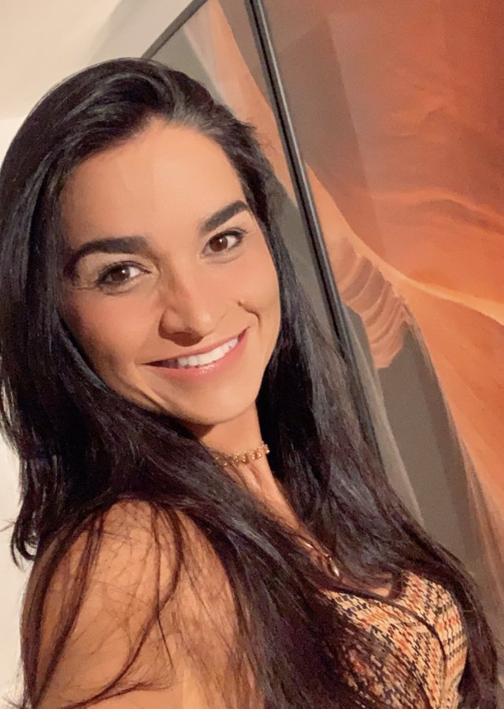

O filtro entra na rotina
Em Salvador, com sol forte o ano inteiro: aplicar pela manhã e reaplicar ao longo do dia e depois de suar ou entrar no mar, também nos dias nublados.
DermatologistaCRM-BA 15146RQE 6812
“Cuidar da pele também é cuidar de como você se sente.”Dra. Marilu, no Instagram
Membro titular da Sociedade Brasileira de Dermatologia, com título em Dermatologia (RQE 6812). Cuida da pele, dos cabelos e das unhas de adultos e crianças, da acne ao exame das pintas, das manchas aos procedimentos, com hora marcada no Vitória Boulevard, na Av. Sete de Setembro.
Por onde começar
Cada página reúne informações sobre um tema da dermatologia, com as palavras da própria Dra. Marilu quando ela já falou sobre o assunto. A indicação de cada cuidado é individual, definida em consulta.
Acne, dermatite seborreica, foliculite, eczema e cicatrizes: o que a consulta avalia.
Dermatologia clínicaPintasDermatoscopia, sinais de alerta e a fotoproteção de todo dia.
Câncer de pele e pintasCabelos e unhasTricoscopia, alopecias e as alterações das unhas.
Cabelos e unhasManchasTratamento e manutenção, com o sol sob controle.
Manchas e melasmaTambém: tecnologias e injetáveis · quem é a Dra. Marilu · onde ela atende
Pele, cabelo e unha
“Dermatologia é a especialidade médica que cuida da pele, que é o maior órgão do corpo e anexos, ou seja, cabelo e unha.”Dra. Marilu Tiúba, no Programa Nomes (YouTube, 22/03/2026)
Por isso a consulta olha o conjunto: a pele do rosto e do corpo, as pintas, o couro cabeludo, os fios e as unhas. Na Doctoralia, ela lista entre as áreas em que tem experiência a cosmiatria, a cirurgia dermatológica, as doenças do cabelo e das unhas, as manchas na pele e a dermatologia estética.
Acne, dermatites, foliculite, eczema, cicatrizes, manchas e o exame das pintas.
Dermatologia clínica CabeloQueda de cabelo, falhas e alopecias, avaliadas também com a tricoscopia.
Cabelos e unhas UnhaUnhas frágeis, manchas, descolamentos e faixas escuras que surgem na unha.
Unhas
Nas palavras dela
“Porque, para mim, medicina é gostar de gente. É saber cuidar. É respeitar o outro. É fazer o que é certo.”Dra. Marilu, no Instagram
Nos meus pacientes faço somente o que realmente acredito e que faria em mim.
Uma relação de confiança entre médico e paciente torna o diagnóstico mais preciso, o tratamento mais individualizado e o cuidado mais humano.
[…] me mantendo comprometida em não te vender um procedimento de que você talvez não precise e com a sua saúde em primeiro lugar!
Fotoproteção
Dra. Marilu à Radioagência Nacional (EBC), em 01/01/2026
A fotoproteção é tema das entrevistas da Dra. Marilu. Na Radioagência Nacional, ela explicou como os filtros atuam: “[…] hoje, a gente sabe que ele vai além da proteção para UVB […] Ele protege para UVA, que é uma radiação extremamente silenciosa e danosa […]”.
Em Salvador, com sol forte o ano inteiro: aplicar pela manhã e reaplicar ao longo do dia e depois de suar ou entrar no mar, também nos dias nublados.
A base com fator de proteção não substitui o filtro solar: ele vem antes, na quantidade certa.
Ouvir a entrevista“O bronzeamento artificial é um assunto que nós, médicos dermatologistas, temos o importante papel de alertar e informar à população sobre os seus riscos à saúde da pele, principalmente a longo prazo”.
Ler no BNews (12/01/2025)Trajetória
O Cadastro Nacional de Estabelecimentos de Saúde (CNES) registra a Dra. Marilu como dermatologista desde agosto de 2007. A formação anterior é a que ela mesma informa na Doctoralia e no LinkedIn.
Primeiro registro como dermatologista no Cadastro Nacional de Estabelecimentos de Saúde, em agosto de 2007.
Quase oito anos como dermatologista do hospital, em atendimento pelo SUS, de 08/2007 a 04/2015.
Atuou como dermatologista do hospital (CNES, 12/2024 a 06/2026); foi assim que o BNews a apresentou em janeiro de 2025.
Entrevistas sobre fotoproteção (EBC, 01/01/2026) e sobre a trajetória na dermatologia (YouTube, 22/03/2026).
Com título em Dermatologia (RQE 6812), atende com hora marcada no Vitória Boulevard.
Avaliações
Excelente profissional! Humana, honesta, atenciosa, competente!
Dra Marilu é uma médica muito preparada e estudiosa!
Sou sua cliente há muito tempo e confio muito nos seus diagnósticos
Excelente profissional, conversa com o paciente explica detalhes do procedimento
Gosto que a Dra Marilu tem muito bom senso com o que prescreve […] além de desmitificar muitas coisas que a gente lê por aí e que não têm embasamento.
Excelente profissional, dedicada, amorosa, responsável, faz seu trabalho com amor e muita responsabilidade.
Sou paciente há anos e mesmo morando em outra cidade, sempre que posso realizo acompanhamento com ela.
Opiniões públicas de pacientes no perfil da Dra. Marilu na Doctoralia, com o nome abreviado como aparece lá.
Entrevistas e conteúdos
Entrevistas, vídeos e as redes em que a Dra. Marilu fala de fotoproteção, câncer de pele, cabelos e da rotina do consultório.
Consultório
Vitória Boulevard · 3º andarAv. Sete de Setembro, 1839 · Vitória, Salvador – BA · CEP 40080-002
No Instituto Invicta
Perguntas frequentes
Pelo WhatsApp (71) 99659-9909. O atendimento é com hora marcada, e a equipe informa os dias e horários disponíveis.
No Vitória Boulevard, na Av. Sete de Setembro, 1839, 3º andar, no bairro da Vitória, em Salvador, no Instituto Invicta.
O atendimento é com hora marcada. Confirme dias e horários com a equipe pelo WhatsApp.
Sim. No perfil da Doctoralia, a Dra. Marilu informa que atende adultos e crianças de qualquer idade.
Sim. O exame da pele e das pintas faz parte da consulta dermatológica, e a dermatoscopia ajuda a avaliar cada pinta com mais detalhe. A frequência dos exames é orientada em consulta.
Sim. A Dra. Marilu atua em cosmiatria, com lasers e tecnologias, toxina botulínica, preenchimento e bioestimulador de colágeno. A indicação é individual, definida em consulta, depois da avaliação da pele.
Confirme com a equipe, ao agendar, as formas de atendimento.
Agende
Atendimento com hora marcada na Av. Sete de Setembro, 1839, 3º andar, no bairro da Vitória. Confirme dias e horários com a equipe pelo WhatsApp.